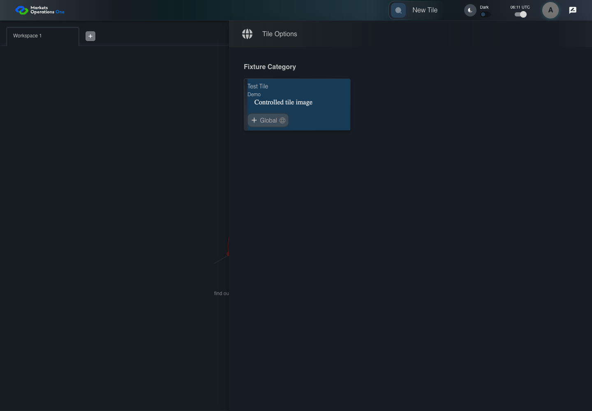
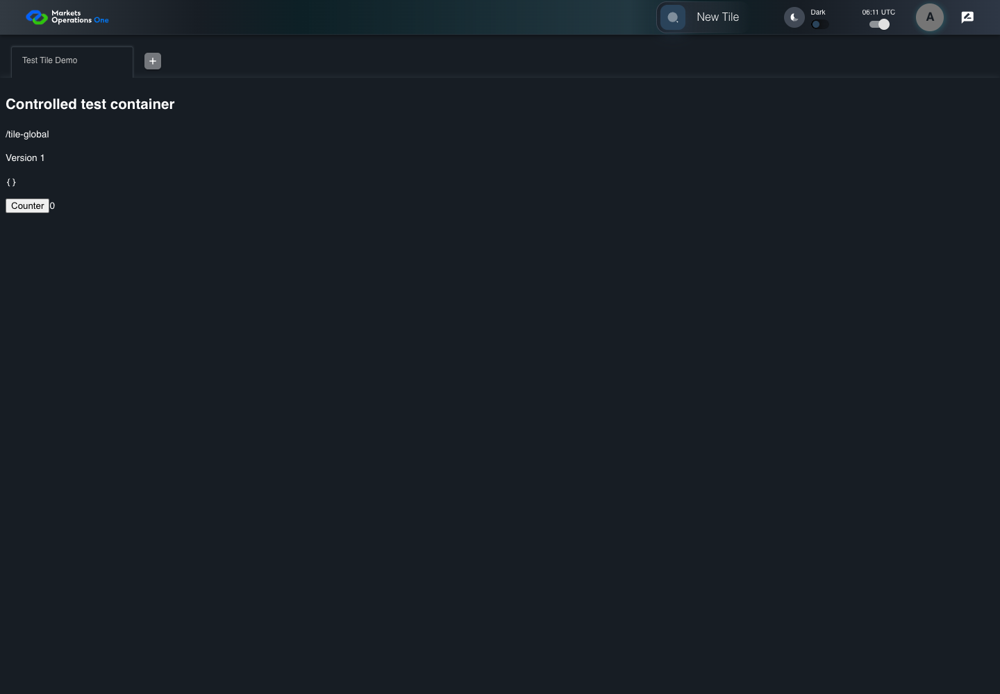

UI-SHL-017 place the first tile in an empty workspace
PASS · application/run-050/ui-shl-017-place-the-first-tile-in-an-empty-workspace-2fcca5b43dc3-attempt-1 · ACTUAL_APPLICATION_LOCAL_SERVICES
Actual current React shell and browser storage. Controlled login/validation/activity renewal, UI-USER-01 permissions, catalog, and SystemJS React component. Markers, counter, and registered refresh callback are controlled fixture observations. No real business tenant or BFF authorization acceptance.
2026-10-22T06:11:04.765Z to 2026-10-22T06:11:07.441Z
Assertions and result · Artifact manifest · Exact run inputs and source hashes
Result SHA-256:3931e3c2a17e8ae87122ab1195b58e7e9e99d0a3cb4b9fe60a32a906fddbb6d6Screenshot capture: CAPTURED. Named frames: 8.
Step screenshot evidence: COMPLETE. 7/7 canonical steps have execution screenshots.
Canonical step timeline
Given User A is authenticated as fixture UI-USER-01 with the case-specific permissions
Execution: PASSED.
1. step-01 Visible state after step 1: Given User A is authenticated as fixture UI-USER-01 with the case-specific permissions
2026-10-22T06:11:05.894Z · 1440×1000
Step: /Users/lushevol/code/github/ratan-release-impact/workbench/tasks/ui-test-coverage-20261022/test-cases.md:5903
SHA-256:365bc064ef8cf5c078cc86e5b2ea3862073c96c42997e29e292354516d2ec559And W1 is empty and Test Tile is enabled in the drawer
Execution: PASSED.
2. step-02 Visible state after step 2: And W1 is empty and Test Tile is enabled in the drawer
2026-10-22T06:11:06.824Z · 1440×1000
Step: /Users/lushevol/code/github/ratan-release-impact/workbench/tasks/ui-test-coverage-20261022/test-cases.md:5904
SHA-256:a9cc5748511fc92114091b7a54549e0afb10389905899f29d11fa611b52a5efcWhen User A clicks section with text "Test Tile" inside the tile group with subtitle "Demo" in the fixture category inside the right drawer titled "Tile Options"
Execution: PASSED.3. step-03 Visible state after step 3: When User A clicks section with text "Test Tile" inside the tile group with subtitle "Demo" in the fixture category inside the right drawer titled "Tile Options"
2026-10-22T06:11:06.925Z · 1440×1000
Step: /Users/lushevol/code/github/ratan-release-impact/workbench/tasks/ui-test-coverage-20261022/test-cases.md:5905
SHA-256:9bf51801688001d0299b01c6d87e4757de30b8f8b2867d0b78e2f9187ca8467dThen the tab count inside the tablist named "workspaces" equals 1
Execution: PASSED.
4. step-04 Visible state after step 4: Then the tab count inside the tablist named "workspaces" equals 1
2026-10-22T06:11:06.974Z · 1440×1000
Step: /Users/lushevol/code/github/ratan-release-impact/workbench/tasks/ui-test-coverage-20261022/test-cases.md:5906
SHA-256:9bf51801688001d0299b01c6d87e4757de30b8f8b2867d0b78e2f9187ca8467dAnd tab with source identity "Workspace Name textbox value Test Tile Demo" inside the shell tablist named "workspaces" is selected
Execution: PASSED.
5. step-05 Visible state after step 5: And tab with source identity "Workspace Name textbox value Test Tile Demo" inside the shell tablist named "workspaces" is selected
2026-10-22T06:11:07.022Z · 1440×1000
Step: /Users/lushevol/code/github/ratan-release-impact/workbench/tasks/ui-test-coverage-20261022/test-cases.md:5907
SHA-256:9bf51801688001d0299b01c6d87e4757de30b8f8b2867d0b78e2f9187ca8467dAnd text with text "/tile-global" inside the selected tile tabpanel is visible
Execution: PASSED.
6. step-06 Visible state after step 6: And text with text "/tile-global" inside the selected tile tabpanel is visible
2026-10-22T06:11:07.071Z · 1440×1000
Step: /Users/lushevol/code/github/ratan-release-impact/workbench/tasks/ui-test-coverage-20261022/test-cases.md:5908
SHA-256:9bf51801688001d0299b01c6d87e4757de30b8f8b2867d0b78e2f9187ca8467dAnd section with text "Tile Options" inside the right-side shell drawer is hidden
Execution: PASSED.
7. step-07 Visible state after step 7: And section with text "Tile Options" inside the right-side shell drawer is hidden
2026-10-22T06:11:07.121Z · 1440×1000
Step: /Users/lushevol/code/github/ratan-release-impact/workbench/tasks/ui-test-coverage-20261022/test-cases.md:5909
SHA-256:2fb568ccb9d95afc414c0b104dc7ad4e3b8e4f92048354483127905ae1b15825
Additional named frames

The final visible state after the named test assertions.
2026-10-22T06:11:07.187Z · 1440×1000Step: Test source: /Users/lushevol/code/github/ratan-release-impact/workbench/e2e/audit-specs/shell-expanded.spec.ts:77
SHA-256:
2fb568ccb9d95afc414c0b104dc7ad4e3b8e4f92048354483127905ae1b15825Screenshots establish visible state only. Assertions and traces support functional claims.